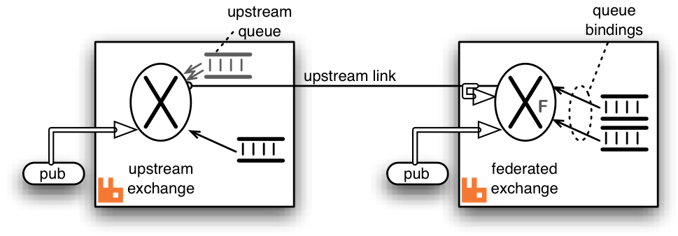
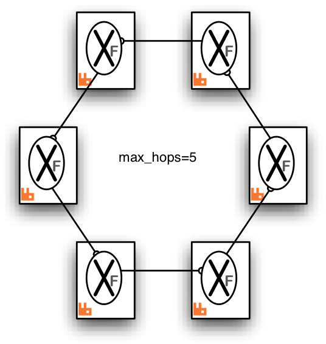

Federated Exchanges
Overview
This guide covers federated exchanges, a subset of functionality offered by the Federation plugin.
Some covered topics include:
- An overview of exchange federation
- Common use cases
- Usage and configuration
- Limitations of exchange federation
- Example topologies
- Implementation details
A separate Federation plugin reference guide is available.
Exchange federation is a mechanism that allows a flow of messages through an exchange in one location (called the upstream or the source) be replicated to exchanges in other locations (downstreams). The downstreams are independent nodes or clusters that can span wide area networks (geo regions). The replication process is asynchronous and tolerates connectivity failures.
A federated exchange links to other exchanges. Conceptually, messages published to the upstream exchanges are copied to the federated exchange, as though they were published directly to the federated exchange. The upstream exchanges do not need to be reconfigured. They are assumed to be located on a separate node or in a separate cluster.
An upstream definition is a URI with certain recognised query parameters that control link connection parameters. Upstreams can be managed using CLI tools or the HTTP API with an additional plugin.
Here is a diagram showing a single upstream exchange (the source exchange) in one node linking to a set of two downstream exchanges in two other nodes:

When exchange federation is used, usually only a subset of exchanges in a cluster is federated. Some exchanges can be inherently local to the "site" (cluster) and its uses.
Exchange federation will propagate bindings from the downstream to the upstreams when possible. It will also apply optimizations and propagate messages selectively if needed. This is covered in future sections.
Use Cases
Federated exchanges can be used to replicate a flow of certain message types to remote locations. Combined with continuous schema synchronisation and queue and message TTL, this can be used to maintain a hot standby with reasonably up-to-date data within a controlled time window.
Another use would be to implement massive fanout with a single "source" exchange in one cluster (which acts as the source and need not be federated) can be declared as upstream by many other federated exchanges in other brokers. In turn, each of these can be upstream for many more exchanges, and so on.
See the example diagrams below for some possible arrangements.
Limitations
Exchange federation supports all built-in exchange types. 3rd party exchange types might work depending on their semantics.
The default exchange (with the blank name) cannot be federated as it is not a typical exchange and relies on node-local optimizations other exchange types do not use.
Exchanges with the internal property set to true are declared and internally used by RabbitMQ and cannot be federated.
Usage and Configuration
Federation configuration uses runtime parameters and policies, which means it can be configured and reconfigured on the fly as system topology changes. There are two key pieces of configuration involved:
- Upstreams: these are remote endpoints in a federated system
- Federation policies: these control what exchanges are federated and what upstreams (sources) they will connect to
Both of those are configured on the upstream nodes or clusters.
To add an upstream, use the rabbitmqctl set_parameter command. It accepts three parameters:
- Parameter type, federation-upstream
- An upstream name that federation policies will refer to
- An upstream definition JSON document with at least one mandatory key, uri
The following example configures an upstream named "source" which can be contacted at remote-host.local:5672:
# Adds a federation upstream named "origin"
rabbitmqctl set_parameter federation-upstream origin '{"uri":"amqp://localhost:5672"}'
On Windows, use rabbitmqctl.bat and suitable PowerShell quoting:
# Adds a federation upstream named "origin"
rabbitmqctl.bat set_parameter federation-upstream origin "{""uri"":""amqp://localhost:5672""}"
More upstream definition parameters are covered in the Federation Reference guide.
Once an upstream has been specified, a policy that controls federation can be added. It is added just like any other policy, using :
# Adds a policy named "exchange-federation"
rabbitmqctl set_policy exchange-federation \
"^federated\." \
'{"federation-upstream-set":"all"}' \
--priority 10 \
--apply-to exchanges
Here's a Windows version of the above example:
# Adds a policy named "exchange-federation"
rabbitmqctl.bat set_policy exchange-federation ^
"^federated\." ^
"{""federation-upstream-set"":""all""}" ^
--priority 10 ^
--apply-to exchanges
In the example above, the policy will match exchanges whose name begins with a federated. prefix in the default virtual host. Those exchanges will set up federation links for all declared upstreams. The name of the policy is exchange-federation. As with any policy, if multiple policies match an exchange, the one with the highest priority will be used. Multiple policy definitions will not be combined, even if their priorities are equal.
Once configured, a federation link (connection) will be opened for every matching exchange and upstream pair. By "matching exchange" here we mean an exchange that is matched by the federation policy pattern. If no exchanges matched, no links will be started.
To disable federation for the matching exchanges, delete the policy using its name:
rabbitmqctl clear_policy exchange-federation
Complex Topologies and Loop Handling
A federated exchange can be "upstream" from another federated exchange. One can even form "loops", for example, exchange A declares exchange B to be upstream from it, and exchange B declares exchange A to be upstream from it. More complex multiply-connected arrangements are allowed.
Such complex topologies will be increasingly difficult to reason about and troubleshoot, however.
To prevent messages being continually copied and re-routed (in a never-ending cycle) there is a limit placed on the number of times a message can be copied over a link (max-hops below).
It is recommended that all the exchanges linked by federation are of the same type. Mixing types can and likely will lead to confusing routing behaviours.
Implementation
Inter-broker communication is implemented using AMQP 0-9-1 (optionally secured with TLS). Bindings are grouped together and binding operations such as queue.bind and queue.unbind commands are sent to the upstream side of the link when bindings change in the downstream.
Therefore the exchange only receives messages for which it has bindings. The bindings are replicated with the upstream asynchronously so the effect of adding or removing a binding is only guaranteed to be seen eventually.
The messages are buffered in an internally declared queue created in the upstream exchange's cluster. This is called the upstream queue. It is the upstream queue which is bound to the upstream exchange with the grouped bindings. It is possible to tailor some of the properties of this queue in the upstream configuration.
Here is a detailed diagram showing a single federated exchange linking to a single upstream exchange including the upstream queue and bindings created by the federation plugin shown in grey. The fat arrow on the upstream link indicates messages republished by the federated exchange. Some potential publisher clients are shown publishing to both exchanges.

Publications to either exchange may be received by queues bound to the federated exchange, but publications directly to the federated exchange cannot be received by queues bound to the upstream exchange.
Example Topologies
We illustrate some example federation topologies. Where RabbitMQ brokers are shown in these diagrams indicated by
(indicated by a  )
)
it can be a cluster of nodes or a standalone node.
| Topology | Description |
| Pair of federated exchanges |
Each exchange links to the other in this symmetric arrangement. A publisher and consumer connected to each broker are illustrated. Both consumers can receive messages published by either publisher. 
Both links are declared with `max-hops=1` so that messages are copied only once, otherwise the consumers will see multiple copies of the same message (up to the `max-hops` limit). |
| Complete Graph |
This arrangement is the analogue of the pair of federated exchanges but for three exchanges. Each exchange links to both the others. 
Again `max-hops=1` because the "hop distance" to any other exchange is exactly one. This will be the case in any complete graph of federated exchanges. |
| Fan-out |
One source exchange (which it is _not_ necessary to federate) is linked to by a tree of exchanges, which can extend to any depth. In this case messages published to the source exchange can be received by any consumer connected to any broker in the tree. 
Because there are no loops it is not as crucial to get the `max-hops` value right, but it must be at least as large as the longest connecting path. For a tree this is the number of levels minus one. |
| Ring |
In this ring of six brokers each federated exchange links to just one other in the ring. The `"max-hops"` property is set to 5 so that every exchange in the ring sees the message exactly once. This topology, though relatively cheap in queues and connections, is rather fragile compared to a completely connected graph. One broker (or connection) failure breaks the ring. |
Getting Help and Providing Feedback
If you have questions about the contents of this guide or any other topic related to RabbitMQ, don't hesitate to ask them on the RabbitMQ mailing list.
Help Us Improve the Docs <3
If you'd like to contribute an improvement to the site, its source is available on GitHub. Simply fork the repository and submit a pull request. Thank you!